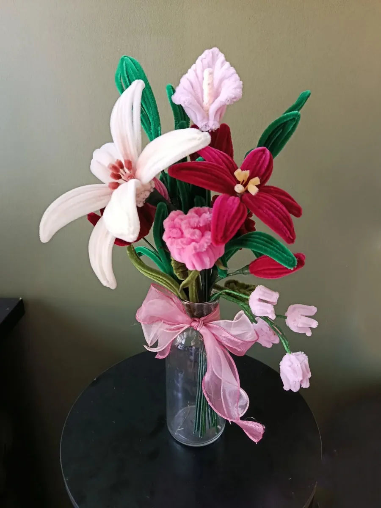

Une idée pour chaque occasion
Bouquet de mariée et centres de table en fleurs éternelles
Un bouquet de mariée qui se garde toute la vie, des centres de table qui ne fanent pas avant la fin de la soirée : les fleurs en fil chenille racontent votre histoire, aux couleurs de votre mariage.
Un bouquet de mariée éternel
Le bouquet de mariée est souvent le seul objet du mariage que l’on aimerait garder intact. En fil chenille, il ne fane pas : il se pose ensuite dans le salon, comme un souvenir du grand jour.
Lys blancs, arums, roses, hortensias : nous choisissons ensemble les fleurs et les couleurs, à partir de vos idées ou d’une de mes créations.
Centres de table et décorations
Un centre de table se regarde de tous les côtés : je le compose avec des fleurs à voir de chaque place. Pour les mariages, je réalise aussi des petites fleurs à offrir aux invités ou à poser sur les tables.
Parlons de votre projet
Décrivez-moi votre mariage, vos couleurs et la date via le formulaire de contact, en choisissant le sujet « Mariage & événements ». Je vous réponds avec des propositions et un prix, calculé à 8 € par fleur.
Mes idées de créations


Les autres occasions
Les fleurs de l’atelier
- Rose en fil chenille
- Tulipe en fil chenille
- Lys en fil chenille
- Gerbera en fil chenille
- Pavot et coquelicot en fil chenille
- Arum en fil chenille
- Hortensia en fil chenille
- Tournesol en fil chenille
- Muguet en fil chenille
- Lavande en fil chenille
- Jonquille en fil chenille
- Marguerite en fil chenille
- Pensée en fil chenille